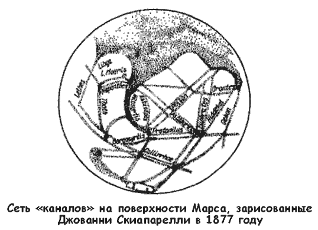
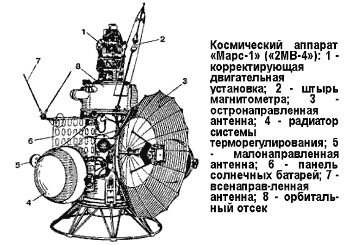
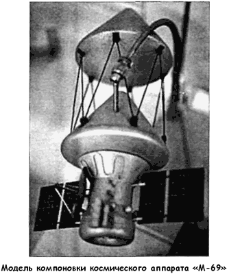
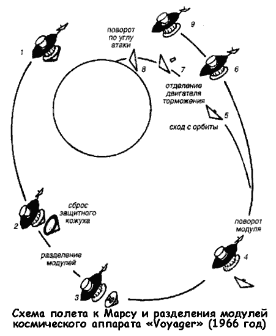
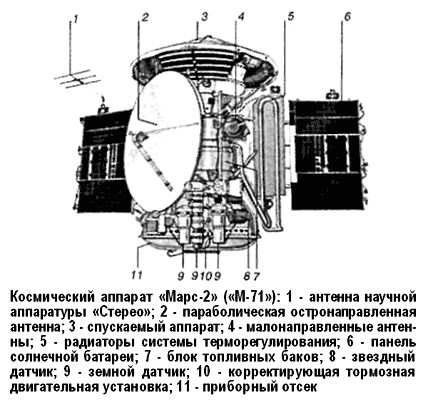
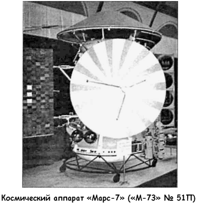
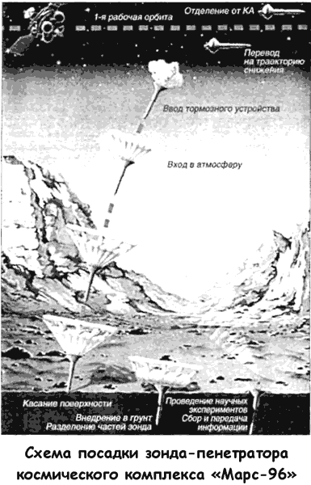

Есть ли жизнь на Марсе?
Проекты, которые мы обсудили в предыдущих главах, безусловно интересны. Некоторые из них вполне можно реализовать в самом ближайшем будущем и для этого даже не понадобится привлекать государственное финансирование, как это было в недавнем прошлом. Космонавтика (а особенно околоземная, орбитальная) перестает быть государственной вотчиной; в эту сферу человеческой деятельности приходят небольшие корпорации и частные лица, что не может не радовать, поскольку в этом виден залог ее дальнейшего развития, который не зависит более от политической или военной конъюнктуры.
Тем не менее существует еще один глобальный проект, который, смею надеяться, будет реализован в обозримом будущем, но который потребует объединения усилий всех мировых держав. Это — экспедиция на Марс, главная задача которой — выяснить, есть ли там жизнь…
Различные народы в разные времена по-разному представляли себе количество и уровень цивилизаций, которые могут существовать во Вселенной. Даже в рамках европейской цивилизации эти оценки со временем подвергались значительным изменениям. Например, в XVII веке довольно широкое распространение получила идея обитаемости всех без исключения планет Солнечной системы.
Христиан Гюйгенс (1629–1695), известный выдающимися работами в области оптики, написал трактат о множественности обитаемых миров, в котором утверждал, что на Меркурии, Марсе, Юпитере и Сатурне есть «поля, согреваемые добрым теплом Солнца и орошаемые плодотворными росами и ливнями». В «полях», полагал Гюйгенс, обитают растения и животные. В противном случае эти планеты «бы ли бы хуже нашей Земли», что астроном считал абсолютно неприемлемым.
Такой довод, столь странно звучащий в наши дни, основывался на развитых Коперником представлениях об окружающем мире, согласно которым Земля не занимает особого места среди планет, и Гюйгенс разделял эти взгляды. По той же причине он полагал, что на планетах должны жить разумные существа: «возможно, не в точности такие люди, как мы сами, но живые существа или какие-то иные создания, наделенные разумом». Подобное заключение казалось Гюйгенсу столь бесспорным, что он писал: «Если я ошибаюсь в этом, то уже и не знаю, когда могу доверять своему разуму, и мне остается довольствоваться ролью жалкого судьи при истинной оценке вещей».
Мало что изменилось в этих в этих представлениях и столетие спустя. Известный философ Иммануил Кант (17241804) в своем труде «Всеобщая естественная история и теория неба» писал: «…большинство планет, несомненно, обитаемы, а необитаемые со временем будут населены. […] Вещество, из которого состоят обитатели различных планет, в том числе животные и растения, вообще должно быть тем легче и тоньше, чем дальше планеты отстоят от Солнца. Совершенство мыслящих существ, быстрота их представлений становятся тем прекраснее и совершеннее, чем дальше от Солнца находится небесное тело, на котором они обитают».
Из приведенной цитаты родилась целая теория о том, что чем дальше планета от Солнца, тем она старше, а следовательно, разумная раса, населяющая, скажем, Марс, гораздо древнее и мудрее человечества.
В течение следующих двух столетий вера в возможность внеземной жизни претерпевала подъемы и спады по мере того как новые открытия, объясняющие природу жизни на Земле и условия на соседних планетах, следовали из новых достижений в способах научных исследований.
Уже тогда наиболее подходящим пристанищем для внеземной жизни считался Марс. Причины всеобщего увлечения Марсом очевидны. Красноватый цвет планеты и ее петлеобразные движения по небу издавна привлекали особое внимание. Тщательные наблюдения Марса, выполненные Тихо Браге (1546–1601), позволили Иоганну Кеплеру (1571–1630) сформулировать и опубликовать три основополагающих закона движения планет. Еще при жизни Кеплера изобретение телескопа позволило ученым разглядеть постоянные детали на красноватом диске Марса. Дальнейшие наблюдения привели к открытию полярных шапок, облаков, сезонных изменений контрастности светлых и темных областей.
В последние десятилетия XIX века к загадкам Марса прибавилась еще одна. В 1877 году итальянский астроном Джованни Скиапарелли (1835–1910) из Милана на основании своих наблюдений сделал рисунок, вошедший впоследствии во все книги о Марсе, — сеть геометрически правильных линий, которые он назвал «canali», что в переводе означает и не каналы вовсе, как можно подумать и как подумали, а «русла рек».

Скиапарелли был очень осторожным человеком и не торопился с выводами. Выводы за него сделали другие. Против своей воли итальянский астроном стал первооткрывателем марсианской цивилизации. Однако и он ошибся. Оптический обман, вызванный несовершенством телескопа и заставивший глаз видеть непрерывные линии там, где на самом деле были лишь темные точки, сыграл с астрономом злую шутку.
«Каналы» вызвали горячую полемику, в которую включились столь опытные наблюдатели, как Барнард в США и Антониади во Франции, твердо убежденные, что каналы не существуют, в то время как другие утверждали, что каналы не только видны при визуальных наблюдениях, но и могут быть сфотографированы. Но сильнее всех в реальность марсианских каналов верил Персиваль Ловел (1855–1916), который построил собственную обсерваторию во Флагстаффе (штат Аризона). Там он провел тщательные наблюдения Марса с помощью 24-дюймового телескопа и составил карту сети каналов, покрывающих всю поверхность планеты, за исключением ледяных полярных шапок.
Казалось, что эта сеть подвергается сезонным изменениям одновременно с изменениями в обширных темных областях Марса. Каналы всегда темнели, а иногда раздваивались с началом марсианского лета. Ловел предположил, что каналы построили разумные марсиане, чтобы подвести воду от тающих полярных шапок для орошения темных областей, которые иначе не дали бы урожая. Сезонное увеличение контрастности между светлыми и темными областями, утверждал Ловел, — это прямое следствие роста растений в темных областях в летнем полушарии. Он полагал, что наблюдаемое потемнение (и раздвоение) каналов происходит потому, что растительность вдоль них бурно разрастается с наступлением марсианской весны, а это улучшает видимость каналов для удаленного наблюдателя.
Мировая общественность, вообще склонная к принятию всевозможных чудес и сенсаций, с восторгом отнеслась к идеям Довела, подкрепленным многочисленными наблюдениями других астрономов. Сомнений не оставалось уже ни у кого: Марс населен, и жители Марса намного превосходят по своему развитию землян.
В первые десятилетия XX века астрономы разработали мощные астрофизические методы, применение которых к изучению Марса нанесло тяжелый удар по гипотезе Довела.
Радиометрические наблюдения показали, что средняя температура на Марсе значительно ниже точки замерзания воды, а во время марсианской ночи еще почти на 100 °C ниже. Астрономам не удалось обнаружить пары воды или кислород в атмосфере Марса, и они все больше утверждались во мнении, что атмосфера должна быть чрезвычайно разреженной.
Тем не менее в отсутствие прямых доказательств, свидетельствующих в пользу той или иной гипотезы, горячая полемика по вопросу о жизни на Марсе продолжалась.
В Советском Союзе одним из наиболее сведущих специалистов по этому вопросу считался академик Гавриил Тихов (1875–1960). Откроем стенограмму его лекции «Новейшие исследования по вопросу о растительности на планете Марс», прочитанной в 1948 году. В заключительном разделе мы обнаружим уверенное заявление:
«…Исключительное значение приобретает открытие, сделанное в 1947 г. американским астрономом Куйпером.
Пользуясь мощными инструментами Иеркесовской обсерватории, он обнаружил, что атмосфера Марса содержит, по крайней мере, столько же углекислого газа, как и земная атмосфера.
Больше того: оказалось, что таких ядовитых газов, как аммиак и метан, в изобилии имеющихся в атмосферах больших планет, на Марсе совсем нет.
Значит, на этой планете, несмотря на ее суровый по сравнению с Землей климат, жизнь растений вполне возможна.
А отсюда не исключена возможность и того, что на Марсе может существовать и животный мир».
Таким образом, и в конце 40-х годов вопрос о жизни на Марсе все еще оставался открытым, и всем уже было понятно, что ответить на него можно только путем непосредственных наблюдений — послав к Марсу автоматическую обсерваторию, способную поддерживать связь с Землей.
Такая возможность вскоре представилась. В Советском Союзе и в Америке появились ракеты-носители, мощности которых было достаточно, чтобы отправить полезный груз к другой планете. И вот тут ученые вдруг столкнулись с рядом непреодолимых проблем.
Словно злой рок витает над марсианской программой.
Две трети зондов, отправляемых в сторону красной планеты, погибают или теряются при очень странных обстоятельствах.
Ни одна другая планета Солнечной системы не обходилась так дорого космическим агентствам СССР и США.
Пойдем по порядку. Первую автоматическую станцию к Марсу, проходившую под обозначением «1М», советские конструкторы планировали отправить в сентябре 1960 года, когда образовалось «астрономическое окно» для таких пусков.
Уже для этой станции профессор Александр Лебединский подготовил блок оборудования, включавший фототелевизионное устройство и спектрорефлексометр, призванный определить, есть ли жизнь на Марсе. Сергей Королев предложил предварительно проверить этот блок в степи. К восторгу ракетчиков прибор показал, что на Байконуре жизни нет.
В результате оборудование Лебединского оставили на Земле.
Из-за задержек с подготовкой станции и ракеты старт все время откладывался. В конце концов, когда надежды на то, что станция пройдет вблизи красной планеты, уже не оставалось, запуск состоялся. 10 октября ракета-носитель «Молния» с аппаратом «М» № 1 ушла со старта. Однако тут же потерпела аварию.
Причину установили довольно быстро. Две первые ступени носителя работали нормально. Но на участке работы третьей ступени прошла ложная команда, и ракета начала отклоняться от расчетной траектории полета. Автоматика выдала команду на отключение двигателя, и ракета со станцией устремилась к Земле, а потом сгорела в атмосфере над Восточной Сибирью.
Лихорадочно подготовили второй пуск. Он состоялся 14 октября. И опять авария. На этой раз нарушилась герметичность системы подачи жидкого кислорода. Керосиновый клапан, установленный на третьей ступени, облитый жидким кислородом, замерз, и двигатель третьей ступени не смог включиться. Ракета со станцией «1М» № 2 сгорела в атмосфере над Сибирью.
В 1962 году наступил новый благоприятный период для пуска станций в сторону Марса. На этот раз удалось подготовить три станции — они проходили под обозначением «2MB», чем подчеркивалась их универсальность и возможность использования как для полета к Марсу, так и к Венере.
Две из них, которые вышли на околоземную орбиту 24 октября и 4 ноября 1962 года, повторили судьбу своих предшественниц. Вновь не сработали разгонные блоки, и станции не увидели космических далей.
Однако один пуск успехом все-таки завершился. 1 ноября 1962 года разгонный блок перевел на траекторию полета к Марсу автоматическую станцию, известную ныне под названием «Марс-1». Почти пять месяцев с ней удавалось поддерживать связь. За это время станция приблизилась к Марсу на расстояние в 195 000 километров. Но 21 марта 1963 года из-за неполадок бортовой аппаратуры она «замолчала».
Следующую попытку запустить станцию к Марсу советские ученые предприняли 30 ноября 1964 года. Тогда к Марсу должна была отправиться станция «ЗМВ-4А». Ее удалось вывести на околоземную орбиту, но из-за сбоя в системе ориентации станция ушла в свободный полет.
В те времена, когда удавалось включить разгонный блок и свести станцию с околоземной орбиты, но направить ее не в сторону нужной планеты, а неизвестно куда, для официального сообщения о ней использовали название «Зонд». Также поступили и с «ЗМВ-4А», которой присвоили имя «Зонд-2».
Теперь в любой книге по истории космонавтики вы можете прочитать, что «Зонд-2» был специально запущен для отработки научно-исследовательского оборудования и проведения испытаний плазменных электроракетных двигателей, находившихся на борту. На самом же деле этот запуск был полным провалом.

Не очень хорошо поначалу складывались дела и у американцев.
Первой межпланетной автоматической станцией НАСА, запущенной к Марсу 5 ноября 1964 года, был «Маринер3» («Mariner-З»). Уже на раннем этапе полета станция вышла из-под контроля: похоже, она не освободилась от теплозащитной оболочки из стекловолокна на выходе из земной атмосферы и не смогла удержаться на проектном курсе из-за лишнего веса.
Три недели спустя, 28 ноября 1964 года, был запущен «Маринер-4». Фортуна улыбнулась американцам — станция пролетела в 10 тысячах километров от Марса и передала на Землю 21 фотографию. Темные снимки показали густо изрытую кратерами безжизненную поверхность планеты. Это был первый взгляд человека на Марс с близкого расстояния, и этот беглый взгляд развеял многие мифы. 24 февраля и 27 марта 1969 года НАСА запустило к Марсу еще две автоматические станции — «Маринер-6» и «Маринер-7». Первая пролетела в 3390 километрах от Марса и сделала 76 фотографий; вторая приблизилась на расстояние в 3500 километров и прислала на Землю 126 снимков.
Перед исследователями открылся негостеприимный мир — однообразный и безжизненный. В холодном суровом свете марсианского дня развеялись, словно призраки, теории, подобные теории Персиваля Ловела на заре XX века.
Представитель НАСА заявил: «Мы получили превосходные снимки. Они даже лучше, чем мы могли надеяться еще несколько лет назад. Но что они нам показывают? Унылый ландшафт, безнадежно мертвый. Мало что еще удастся обнаружить».
Следующее десятилетие показало ошибочность этого мнения.
В том же 1969 году советская марсианская программа опять зашла в тупик. Две попытки вывести на орбиту станции типа «М-69» (изделие № 521 запускали 27 марта, а изделие № 522 -14 апреля) закончились неудачей. Ракеты-носители «Протон-К», словно сговорившись, взорвались на участке выведения. Обломки дорогостоящих станций вновь поглотили заснеженные просторы Сибири.

В «марсианской гонке» наступила пауза. В ожидании очередного схождения планет требовалось выработать технические решения, которые бы позволили получить качественно новую информацию о Марсе. Серьезным препятствием на пути программы изучения Марса стало всеобщее сокращение финансирования, которое привело к закрытию интереснейших проектов.
Вот лишь один пример этому. С начала 1960-х годов в НАСА разрабатывалась программа создания серии космических станций «Вояджер» («Voyager»). Эти относительно тяжелые аппараты (1090 килограммов против 260 килограммов у «Маринера-4») могли быть выведены на межпланетные трассы только после появления ракет-носителей «Сатурн-5».
Планировалось, что первой целью «Вояджеров» станет все тот же Марс. При этом, по проекту, станция «Вояджер» могла не только выйти на орбиту вблизи Марса, но и сбросить на его поверхность зонд с биологической лабораторией.

Создатели «Вояджера» не слишком спешили с реализацией своего проекта, поскольку изначально предполагали, что необходимые данные для более оптимального проектирования станции они получат после полетов аппаратов «Маринер». Такая «благоразумная» установка привела к плачевному результату: программа «Вояджер» попала в список второстепенных, и ее бюджет постоянно урезался в пользу других проектов и программ.
В окончательном виде проект космического аппарата «Вояджер» для полета на Марс оформился к декабрю 1964 года. Тогда же было запланировано пять рейсов аппаратов «Вояджер» к Марсу: первый (без посадочного модуля) — в 1969 году, два — в 1971 году, еще два — в 1973 году. Общая стоимость программы должна была составить 1,25 миллиарда долларов, с выплатой первых 43 миллионов в 1965 бюджетном году.
Понятно, что такие деньги не выдают за красивые глаза. Чтобы их получить, создатели «Вояджера» из Лаборатории реактивного движения в Пасадене должны были доказать, что их проект лучше аналогичных разработок по программе «Маринер». В то же время сильный удар по «Вояджеру» нанесла переоценка себестоимости ракетного запуска «Сатурна-5». Из-за этого стоимость программы могла возрасти до 2 миллиардов долларов, что было недопустимо. С тех пор конструкторы из Пасадены даже не заикались о «Сатурне-5», выбрав в качестве носителя ракету «Титан-ЗС» с разгонным блоком «Кентавр».
Несмотря на все усилия конструкторов, направленные на снижение стоимости программы, «Вояджер» все еще казался слишком дорогим на фоне сокращения ассигнований НАСА и увеличения расходов на военные действия во Вьетнаме.
В 1967 году Конгресс не выделил на «Вояджер» ни цента, что привело к свертыванию всех работ по этой теме.
Пересмотру подвергся и бюджет программы «Маринер».
НАСА удалось отстоять только четыре запуска «Маринер-6» и «Маринер-7» — в 1969 году, «Маринер-8» и «Маринер-9» — 1971 году.
Последние два запуска состоялись в запланированный срок. «Маринер-8» должен был произвести съемку топографических особенностей планеты на 70 % ее поверхности с сильно наклоненной орбиты. Смысл заключался в фотографировании Марса при низком положении Солнца над горизонтом, когда оно отбрасывает длинные тени. «Маринер-9» выводился на орбиту, обеспечивающую съемку при высоком Солнце в экваториальных районах.
«Маринер-8» был запущен 8 мая 1971 года. Вскоре после запуска из-за неполадок в системе управления вторая ступень ракеты-носителя «Атлас-Кентавр» отделилась от первой, но в ней отказало зажигание. Автоматическая межпланетная станция упала в Атлантический океан.
«Маринер-9» был призван восполнить потерю, и его оперативно подготовили к выполнению роли предшественника По новому плану аппарат должен был находиться на орбите под углом в 65° к экватору и при минимальной высоте в 1350 километров.
«Маринер-9» запустили с мыса Канаверал 30 мая 1971 года.
Но в полете к красной планете он был не одинок.
Чтобы вернуть приоритет в области перспективных космических исследований, советские конструкторы разработали проект «М-71», предусматривающий отправку к Марсу трех автоматических станций в 1971 году. Первая из них («М-71 С», изделие 170) должна была стартовать раньше и выйти на орбиту искусственного спутника Марса до прилета американского аппарата. Два других, старт которых намечался позже, должны были доставить на поверхность Марса спускаемые зонды, а их орбитальные аппараты — провести исследования с орбиты искусственного спутника планеты.
Первый аппарат, кроме политической задачи, решал, и чрезвычайно важную техническую. Дело в том, что мягкая посадка на поверхность планеты могла быть выполнена только при выдерживании расчетного угла входа спускаемого аппарата в атмосферу Марса с максимально допустимым отклонением от номинала в 5°. При большем угле входа не хватало времени для раскрытия парашютной системы, при меньшем — спускаемый аппарат рикошетировал от атмосферы и уходил в космическое пространство.
Точных эфемерид Марса (координат для последовательных моментов времени) советские ученые не имели. Измерения положения планеты по сигналам его искусственного спутника позволяли получить эти данные и провести коррекцию траекторий движения второго и третьего аппаратов на заключительном участке, тем самым обеспечив расчетные условия входа спускаемых аппаратов в атмосферу.

Разработка эскизного проекта «М-71» была закончена в НПО имени Лавочкина в конце 1969 года. Начался этап изготовления и испытания систем и узлов. Интересно, что сотрудники НПО учитывали возможность «заражения» Марса земными микроорганизмами и постарались свести ее к минимуму: отдельные части спускаемого модуля тщательно стерилизовались, а сборка его проводилась в специально построенном чистом блоке со шлюзовой камерой, фильтрами и бактерицидными лампами.
Станция «М-71С» (получившая при запуске обозначение «Космос-419») стартовала 5 мая 1971 года. Вывести ее на межпланетную траекторию не удалось: оператор выдал неправильную установку на второе включение разгонного блока «Д». Советские ученые потеряли возможность создания первого искусственного спутника Марса и лишились «маяка», позволявшего с высокой точностью определять положение красной планеты. Теперь осталось надеяться на безупречную работу системы космической автономной навигации (СКАН). Решение о разработке этой системы, не имеющей аналогов в мире, и установке ее на 2-й и 3-й аппараты «М-71» принял Совет главных конструкторов в начале 1970 года как запасной вариант на случай аварии станции «М-71 С». В системе использовался оптический угломер, разработанный в ЦКБ «Геофизика». За семь часов до прилета прибор должен был провести первое измерение углового положения Марса относительно базовой системы координат.
Данные измерений передавались в бортовой компьютер системы управления, который рассчитывал вектор третьей коррекции, необходимый для перевода станции на номинальную траекторию. Все операции должны были проводиться на борту космического аппарата без участия и контроля наземного пункта управления. Испытания угломера на стенде системы управления прошли без замечаний. 19 и 21 мая 1971 года на межпланетную траекторию были выведены станции «Марс-2» («М-71» № 171) и «Марс-3» («М-71» № 172). На этот раз ракеты «Протон-К» и разгонные блоки «Д» сработали безупречно.
Три космические станции — одна американская и две советские — благополучно покинули сферу земного притяжения и бесшумно полетели к красной планете.
Несколькими месяцами ранее, в феврале 1971 года, астроном Чарлз Ф. Кейпен из обсерватории имени Довела в Флагстаффе сделал предсказание погоды на Марсе на тот период. Исходя из того, что это было время противостояния в перигелии, он указал на вероятность пылевой бури в конце лета. И вот 21 сентября, когда три аппарата приближались к Марсу, над областью Геллеспонт появилось небольшое облачко…
10 ноября «Маринер-9», опередив советских соперников и находясь в 800 тысячах километров от Марса, впервые включил свою телекамеру, однако она показала планету, чья поверхность была полностью затемнена глобальной пылевой бурей. Ничто не могло проникнуть сквозь пыльный покров.
Поэтому «Маринер-9» выключил свою камеру и стал ждать.
Два советских аппарата «Марс-2» и «Марс-3» не были рассчитаны на подобную ситуацию. Они действовали согласно заложенной программе. 21 ноября 1971 года спускаемый модуль «Марса-2» вошел в атмосферу Марса под большим углом и разбился о поверхность планеты.
Спускаемый модуль «Марса-3» попытался достичь поверхности 2 декабря 1971 года. Во время спуска он в течение 15 секунд передавал слепые кадры, после чего связь с ним была утрачена. Поскольку он совершил посадку среди разрушительной пылевой бури, считается, что его парашют потащило ветром со скоростью 140 м/с, а его самого разбило вдребезги.
Меж тем буря продолжала бушевать. Выйдя на орбиту,
«Марсы» проводили съемку поверхности, но пыль полностью скрывала рельеф. Не видно было даже горы Олимп, возвышающейся на 26 километров. Программа исследований оказалась безнадежно сорвана.
В декабре 1971 года, когда буря улеглась, системы «Маринера-9» вновь привели в рабочее состояние. В отличие от советских аналогов, его компьютер поддавался перепрограммированию после запуска, и таким образом его задание можно было изменить в ходе полета. Подобная гибкость привела к тому, что эта орбитальная станция единственная из всех, запущенных в мае 1971 года, сумела выполнить свое задание.
«Маринер-9» приблизился к Марсу на расстояние в 1370 километров и начал съемку южного полушария между 25° и 65° южной широты, постепенно расширив ее вплоть до 25° северной широты. К моменту, когда 27 октября 1972 года у него закончились запасы энергии, «Маринер-9» сделал 7239 ошеломляющих снимков с разрешением, позволяющим запечатлеть объекты поверхности размером с футбольное поле. И вновь научные представления о красной планете едва не перевернулись с ног на голову.
Наиболее пристальное внимание при изучении фотоснимков Марса привлекли многочисленные протоки — «русла» протяженностью до сотен километров, которые, по-видимому, были «вырыты» в далеком прошлом планеты текущей водой. (Замечу в скобках, что эти русла не видны с Земли и не имеют никакого отношения к каналам Ловела.) Среди них встречаются извилистые речные русла, образующие вместе со своими притоками типичную систему водостока.
Источником воды в этих случаях мог быть лежащий под поверхностью лед (вечная мерзлота), который таял в результате нагревания, вызванного внутренней активностью, а образовавшаяся при этом вода просачивалась на поверхность.
Некоторые русла начинаются внезапно, имея вид очень крупных образований, как бы созданных внезапным катастрофическим наводнением…
Все эти русла образовались довольно давно. Судя по числу перекрывающих их ударных метеоритных кратеров — это древние образования с возрастом порядка миллиарда лет.
Возможность того, что когда-то по поверхности Марса текла жидкая вода, открывала более обнадеживающие перспективы для биологических исследований. Если в далеком прошлом природные условия на планете были таковы, что на ее поверхности могла существовать вода, то, возможно, возникла и жизнь. А если так, то, постепенно приспосабливаясь к ухудшающимся условиям, жизнь на планете могла сохраниться и продолжает существовать до сих пор.
Эта гипотеза требовала экспериментальной проверки.
Следовало готовить следующую экспедицию. 21 сентября 1970 года космический аппарат «Луна-16» конструкции НПО Лавочкина совершил мягкую посадку на лунную поверхность в Море Изобилия, взял пробу грунта и 24 сентября доставил его на Землю.
Вдохновленный этим успехом Главный конструктор НПО Георгий Бабакин поручил своим подчиненным разработать техническое предложение по проекту «5НМ», нацеленному на доставку образцов марсианского грунта. Летом 1970 года такие предложения были выпущены.
Планировалось, что в сентябре 1975 года сверхмощная ракета «Н-1» выведет на траекторию полета к Марсу автоматическую межпланетную станцию «5НМ» массой 20 тонн. Станция включала орбитальный аппарат массой 3600 килограммов, предназначенный для доставки на Марс посадочного аппарата и приема телеметрической информации во время снижения и посадки последнего на марсианскую поверхность.
Орбитальный аппарат состоял из тороидального приборного отсека от станции «М-71» и двигательной установки со сферическим топливным баком от станции «М-69». Посадочный модуль массой 16 тонн имел аэродинамический экран с жесткой центральной частью диаметром 6,5 метра.
После перевода аппарата на межпланетную траекторию открывались 30 лепестков, закрепленных по периметру жесткой части, и образовывался жесткий аэродинамический конус диаметром 11 метров. Внутри экрана устанавливался приборный отсек с системой управления мягкой посадкой, включая доплеровский измеритель скорости и высотомер, а также радиосистемы, программно-временное устройство и систему энергоснабжения. Двигательная установка системы мягкой посадки имела четыре сферических топливных бака и четыре ЖРД с регулируемой тягой. В верхней ее части была установлена двухступенчатая ракета возвращения с орбитальным аппаратом «Марс-Земля», созданным на базе орбитального отсека станций «Венера-4/6», и возвращаемый аппарат массой 15 килограммов, способный вместить 200 граммов марсианского грунта.
Схема полета «5НМ» к Марсу выглядела следующим образом.
Станция выводится на межпланетную траекторию двухступенчатым разгонным блоком. При подлете к Марсу выполняется коррекция траектории. Затем посадочный и орбитальный модули разделялись, последний переводился на пролетную траекторию. В это время посадочный модуль входит в марсианскую атмосферу и, используя асимметричный аэродинамический экран, выполняет планирующий спуск.
Когда его скорость уменьшается до 200 м/с, экран сбрасывается и аппарат совершает мягкую посадку с включением тормозящей двигательной установки.
После посадки планировалось организовать двухстороннюю линию связи посадочного модуля с Землей на дециметровых волнах. По командам с Земли должен был производиться забор грунта в выбранном по панорамам месте и его загрузка в возвращаемый аппарат. Через трое суток по командам с Земли возвратная ракета с орбитальным аппаратом «Марс-Земля» и возвращаемым аппаратом стартовали и выводились на околомарсианскую орбиту высотой 500 километров.
Через 10 месяцев, при достижении благоприятного расположения планет, орбитальный аппарат «Марс-Земля» переводился на межпланетную траекторию возвращения на Землю. При подлете к Земле возвращаемый аппарат отделялся от орбитального и тормозился в атмосфере. Его скорость снижалась до 200 м/с, после чего выпускался парашют и включался радиомаяк, облегчающий поиск возвращаемого аппарата Для отработки систем станции и посадочного аппарата конструкторы НПО имени Лавочкина предполагали реализовать в 1973 году проект «4НМ», осуществив высадку на Марс автоматического вездехода для исследования планеты.
Проект доставки марсианского грунта был обсужден на Научно-техническом совете НПО. При этом он вызвал серьезную критику со стороны Главного конструктора. Дело в том, что поскольку бортовые системы станции не прошли проверку в реальном полете, никто не мог дать гарантии их нормального функционирования в течение почти трех лет.
Смущало Бабакина и то, что проект «5НМ» не обеспечивал стопроцентной биологической безопасности Земли. В случае отказа парашютной системы возвращаемый аппарат разбивался, и микробы, присутствующие в образцах марсианского грунта, попав в тепличные условия, могли начать размножаться с очень большой скоростью. Разумеется, наличие жизни на Марсе находилось под сомнением, но исключать подобную возможность было нельзя.
При всех этих недостатках проект понравился министру общего машиностроения Сергею Афанасьеву. Он пытался убедить Бабакина начать работу, однако Георгий Николаевич отказался.
Тем временем приближалось «астрономическое окно» — июль 1973 года. На этот год планировалось отправить к Марсу сразу четыре станции серии «М-73». Казалось, на сей раз удача улыбнется и советским ученым. Все четыре ракеты-носителя сработали как надо и к Марсу полетела целая вереница аппаратов: орбитальный «Марс-4» («М-73» № 52С), орбитальный «Марс-5» («М-73» № 53С), посадочный «Марс-6» («М-73» № 50П), посадочный «Марс-7» («М-73» № 51П).
К сожалению, ни одна из этих станций не смогла в полном объеме выполнить поставленную перед ней задачу. 10 февраля 1974 года из-за сбоя в бортовом компьютере не включилась тормозная двигательная установка «Марса-4», станция прошла мимо красной планеты на расстоянии 2200 километров, передав на Землю только один снимок, после чего стала искусственным спутником Солнца с периодом обращения 556 дней. 12 февраля 1974 года «Марс-5» вышел на околомарсианскую орбиту высотой в перигее 1760 километров, но быстро растратил энергию и в течение нескольких дней сумел заснять лишь незначительную часть южного полушария планеты. 9 марта 1974 года спускаемый аппарат станции «Марс-7» промахнулся мимо красной планеты, пройдя в 1300 километрах от ее поверхности, и превратился в искусственный спутник Солнца с периодом обращения 574 дня. 12 марта 1974 года спускаемый аппарат станции «Марс-6» вошел в атмосферу Марса, выпустил парашют и начал передавать первые данные. Однако через 150 секунд связь с ним прервалась.
Невзирая на то, что по марсианской программе СССР и по репутации НПО Лавочкина был нанесен тяжелейший удар, министр Афанасьев вновь приказал разработать проект доставки марсианского грунта. Он, видимо, полагал, что провал программы «М-73» дал неоценимый опыт и конструкторы НПО больше не повторят прошлых ошибок.
В это время ситуация изменилась. Поскольку производство ракеты «Н-1» было остановлено, для запуска космических аппаратов мог использоваться только носитель «Протон-К».
Грузоподъемности этой ракеты для выполнения программы полета за грунтом явно не хватало.
Решили использовать схему из трех запусков. Разгонный блок «Д» должен был состыковаться на орбите со вторым таким же блоком, на котором устанавливалась станция. Последовательно срабатывая, блоки могли бы вывести на межпланетную траекторию аппарат массой 8500 килограммов.

При подлете к Марсу от станции отделяется спускаемый модуль, а орбитальный аппарат, служащий ретранслятором телеметрии, переводится на пролетную траекторию. Спускаемый модуль выполняет скользящий спуск в атмосфере и посадку на марсианскую поверхность. Используя панорамные снимки, по командам с Земли образцы грунта собираются и загружаются в капсулу, установленную на второй ступени возвратной ракеты массой 2000 килограммов, которая служит для доставки образцов на околомарсианскую орбиту. На орбите капсула стыкуется с аппаратом, запущенным еще одной ракетой «Протон-К» и содержащим возвращаемый аппарат, в который и перегружается капсула. При наступлении благоприятной даты грунт начинает свое путешествие на Землю. Чтобы избежать «биологического загрязнения», предполагалось перевести возвращаемый аппарат на околоземную орбиту, где его «выловит» пилотируемый корабль, на котором образцы попадут на Землю. Таким образом, для доставки грунта должны были выполняться три запуска ракеты «Протон-К» и три автоматические стыковки в космосе.
Очевидно, этот проект (получивший обозначение «5М») был слишком сложным. Заместитель главного конструктора Пантелеев, которому поручили разработку проекта, для его упрощения и уменьшения числа стыковок в космосе, предложил увеличить массу станции путем модификации блока «Д». Активный блок «Д», функционирующий в качестве первой ступени, должен был передать топливо в пассивный блок, который использовался как вторая ступень при выведении на межпланетную траекторию. Благодаря такой модификации масса аппарата была увеличена с 8500 до 9335 килограммов, включая 200 килограммов резерва Скользящий спуск в марсианской атмосфере заменили на баллистический, изменив форму и конструкцию посадочного модуля.
Если в первом проекте аппарат имел форму фары, то теперь ее заменил конический щит в виде зонтика диаметром 11,35 метра. От жесткой центральной части зонтика диаметром 3 метра отходили вниз бериллиевые спицы, к которым крепился тормозной конус, выполненный из стеклоткани.
Перед запуском станции спицы располагались вдоль корпуса аппарата, а после перевода на межпланетную траекторию раскрывались, образуя аэродинамический щит.
В состав станции массой 9135 килограммов входили: траекторный блок (1680 килограммов) и посадочный модуль (7455 килограммов). Последний включал двухступенчатую взлетную марсианскую ракету массой 3190 килограммов и возвращаемый аппарат «Марс-Земля».
В январе 1976 года новый Главный конструктор НПО Сергей Крюков подписал эскизный проект «5М». К 1978 году, когда были готовы первые узлы и агрегаты станции, ЦНИИмаш выпустил документ, в котором говорилось о большой сложности проекта, его высокой стоимости и низкой вероятности успешного завершения. Основываясь на этом документе, министр Афанасьев решил прекратить работу над «5М». Сергей Крюков не согласился с таким решением и подал прошение об отставке.
В это время НАСА запустило к Марсу две автоматические станции проекта «Викинг» («Viking»): первая из них стартовала 20 августа 1975 года, вторая — 9 сентября. Главной целью полета этих наиболее совершенных на тот момент автоматических космических аппаратов было выяснить, существует ли в действительности жизнь на Марсе. 20 июля и 3 сентября 1976 года спускаемые модули «Викингов» совершили мягкую посадку на поверхность красной планеты. Эксперимент века начался.
За четыре года работы телекамеры «Викингов» не зарегистрировали ничего, напоминающего проявление жизни. Далее, анализ марсианских атмосферы и грунта не выявил никаких особенностей, «типичных» для жизни, напротив, атмосфера и грунт создают более сухую и холодную среду, чем в самых сухих пустынях на Земле. В частности, не обнаружено никаких следов метана, его содержание в атмосфере в масштабах всей планеты лежит ниже 25 миллиардных долей.
Посадочные аппараты «Викингов» выполнили по три опыта, специально разработанные для обнаружения живых организмов. В первом из них — эксперименте «куриный бульон» — образец марсианского грунта помещался в питательную среду, благоприятную для жизни. Эксперимент «разложение метки» заключался в воздействии на образец грунта соединениями, содержавшими атомы радиоактивного углерода, чтобы проверить, вырабатывает ли грунт какие-либо (радиоактивные) соединения, типичные для жизни.
В эксперименте «пиролизное разложение» также применялись меченые атомы, но на этот раз в составе газов марсианской атмосферы. Любым микроорганизмам в грунте была дана возможность взаимодействовать с этой меченой атмосферой, а затем грунт прогревали, чтобы выяснить, содержал ли он меченые окись углерода и углекислый газ.
Поразительно, но все три эксперимента дали результаты, которые свидетельствовали о присутствии жизни. В эксперименте «куриный бульон» произошло высвобождение большого количества кислорода; эксперимент «разложение метки» показал увеличение содержания радиоактивных соединений над марсианским грунтом; эксперимент «пиролизное разложение» также дал положительную реакцию, подобную реакции довольно стерильного антарктического грунта. Однако, когда химический анализ марсианского грунта показал полное отсутствие каких-либо органических веществ вплоть до уровня нескольких миллиардных долей и ниже, ученые программы «Викинг» более тщательно проанализировали результаты трех биологических экспериментов и пришли к выводу, что эти результаты могут объясняться небиологическими химическими реакциями — например, они возможны, если марсианский грунт содержит перекиси.
Неоднозначность полученных результатов вроде бы должна была привести к подготовке новой экспедиции с участием новых автоматических станций или даже человека. Однако произошло примерно то же самое, что в свое время остановило дальнейшее развитие программы «Аполлон». «Марсианская гонка» была выиграна вчистую, проект «Викинг» при неоднозначности результата обошелся американскому налогоплательщику почти в миллиард долларов, у НАСА появились новые амбициозные проекты по исследованию планет-гигантов, объем полученных материалов (51 539 орбитальных снимков, 4500 панорамных снимков с поверхности, многочисленные метеорологические данные) требовал расшифровки и осмысления — все это вместе послужило хорошим предлогом, чтобы на некоторое время забыть о Марсе и марсианах.
В Советском Союзе также признали свое «поражение», отложив тему в долгий ящик. Только в 1979 году в НПО имени Лавочкина вновь обратились к созданию универсальных космических аппаратов для изучения планет Солнечной системы — проект «УМВЛ» («Универсальный [для изучения] Марса, Венеры, Луны»).
Разработка «универсала» продвигалась медленно. В конце концов этот проект вылился в экспедицию, известную под названием «Фобос».
На подготовку экспедиции «Фобос» в период с 1980 по 1989 год было затрачено около 500 миллионов рублей.
В состав новой межпланетной станции, разработанной в Научно-исследовательском центре имени Бабакина, входили собственно космический аппарат и автономная двигательная установка, с помощью которой корректировалась траектория перелета к красной планете и осуществлялся перевод на орбиту искусственного спутника Марса. После выведения аппарата на орбиту наблюдения за Фобосом автономная двигательная установка отделялась и дальнейшее его маневрирование велось с помощью собственной двига-. тельной установки ориентации и стабилизации. Помимо этого, планировалась высадка на поверхность Фобоса специализированных зондов, предназначенных для изучения его грунта. 7 и 12 июля 1988 года, стартовав с космодрома Байконур, четырехступенчатые ракеты-носители «Протон-К» вывели на траекторию полета к Марсу автоматические станции «Фобос-1» («1Ф», изделие № 101) и «Фобос-2» («1Ф», изделие № 102). К сожалению, оба «Фобоса» были потеряны. 2 сентября 1988 года из-за ошибки, допущенной оператором при составлении программы работы бортовой аппаратуры, произошло отключение рабочего комплекта исполнительных органов системы ориентации, что привело к полету «Фобоса-1» в режиме, неориентированном относительно Солнца. По этой причине произошел разряд бортовых химических батарей, и космический аппарат потерял способность принимать радиокоманды. 29 января 1989 года «Фобос-2» достиг окрестностей Марса и был переведен на эллиптическую орбиту над марсианским экватором с периодом обращения трое суток. Несколько позже станцию перевели на эллиптическую орбиту наблюдения высотой около 6300 километров. Исследования продолжались почти два месяца. Станция слушалась команд с Земли, передавала четкие снимки Марса и Фобоса. Все закончилось, когда станция стала сближаться с Фобосом, чтобы сбросить на его поверхность комплект бортовой аппаратуры.
И тут связь прервалась. Наиболее вероятной причиной его потери было признано одновременное «зависание» двух каналов бортовой вычислительной машины и, как следствие, потеря ориентации с переходом в беспорядочное вращение.

Следующий космический аппарат для изучения Марса, получивший название «Марс-96» («Ml», изделие № 520), собрались запустить только через восемь лет. Это был целый комплекс, включавший орбитальную станцию (800 килограммов), два зонда-пенетратора (по 65 килограммов), сбрасываемых на поверхность планеты с целью изучения физикохимических свойств грунта, и две малые автоматические станции для изучения атмосферы (по 50 килограммов).
С помощью орбитальной станции намечалось выполнить серию дистанционных исследований планеты, включая телевизионную съемку. Расчетный срок ее существования — не менее года.
Малые автоматические станции, совершив посадку, должны были функционировать в течение 700 суток, исследуя атмосферу и климат на Марсе, элементный состав его поверхности; результаты измерений передавались бы на орбитальную станцию, а с нее — на Землю.
Особый интерес представляют зонды-пенетраторы. Схема их посадки на Марс выглядела следующим образом. Перед отделением от космического аппарата производится закрутка каждого зонда относительно продольной оси. После отделения включаются твердотопливные двигатели, которые обеспечат его торможение и сход с орбиты. Перед входом в атмосферу наполняется газом надувное тормозное устройство, а в момент удара о поверхность планеты происходит разделение двух частей пенетратора: внедряемой, проникающей на глубину до 4–6 метров, и хвостовой, остающейся в поверхностном слое грунта. После посадки из хвостовой части зонда выдвинется передающая антенна с телекамерой и датчиками научной аппаратуры.
И этот, весьма необычный, проект закончился катастрофой. 16 ноября 1996 года ракета-носитель «Протон-К» с автоматической станцией «Марс-96» на борту стартовала с космодрома Байконур. Уже через девять минут после старта выяснилось, что разгонный блок «Д», который сначала должен был вывести станцию на околоземную орбиту, сработал раньше времени. В результате станция оказалась на сильно вытянутой орбите, в апогее — 1500 километров, в перигее — порядка 75 километров. При этом станция «задевала» верхние слои атмосферы и сильно тормозилась.
Положение мог исправить тот же разгонный блок при повторном включении, но он со своей задачей не справился. Наши специалисты полагали, что аппарат продержится на орбите около месяца, после чего войдет в плотные слои атмосферы и упадет в Тихий океан. Эксперты НАСА предсказали другое: падение состоится через несколько часов. Второй расчет оказался вернее: через сутки после запуска станция сошла с орбиты и затонула в Тихом океане в районе острова Пасхи.
Этот провал стал последним для отечественной марсианской программы. У Российского Космического агентства не нашлось средств на перспективные исследования, и все проекты, запланированные на будущее, были закрыты. Под сокращение попал «Марс-98» — проект автоматической станции, которая должна была доставить на планету марсоход и аэростат. На 2001 год намечался запуск «Марса-2001» — еще один проект облегченного марсохода. Но и он, как мы знаем, остался на Земле…